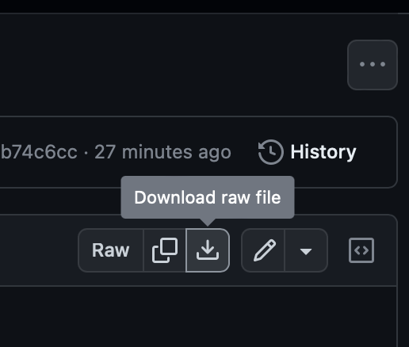

Advanced: Deploying an AWS EC2 VPC and WordPress via Ansible Lightspeed
To conclude the Level 3 education on IBM watsonx Code Assistant for Red Hat Ansible Lightspeed, you have been provided with a complete instruction set for deploying a LIVE environment on Amazon Web Services (AWS) consisting of a WordPress web application running atop an Amazon EC2 VPC. The deployment of the environments will be conducted entirely using Red Hat Ansible automation, executed on your local machine and deployed to AWS cloud. The generation of the Ansible Tasks and code required to automate these deployments will be created using the Generative AI capabilities of the Ansible Lightspeed extension for Code VS.

COSTS
Be aware that deploying a live Amazon EC2 instance on AWS does incur real-world charges which are the responsibility of the individual to pay for. If you wish to go ahead with deploying the live environment— which you are encouraged, but NOT REQUIRED, to do —you will need to do so on your personal AWS account, with any potential billings and charges incurred to your personal credit card.
The billing associated with an Amazon EC2 t2.small instance and other services needed for the demo is minimal: on-demand hourly rate of $0.023 USD at the time of publication.
Additional AWS pricing details and plans are available online.
Ansible Playbooks have been prepared ahead of time in a public GitHub repository and are available for your use at the links below. Once the two YAML files are available on your local machine, open them with VS Code and follow along with the instructions below.
TEMPLATE (.yml): https://github.com/bienko/WCA-Lightspeed-L3/blob/main/TEMPLATE.yml
- The
TEMPLATE.ymlPlaybook contains the skeleton of the application you will ultimately build. Playbook structure, key variables, Task descriptions, and comments are provided. Use the Generative AI capabilities of Ansible Lightspeed to fill out the details of the various Ansible Tasks, then compare the results with theSOLUTION.ymlfile below.
SOLUTION (.yml): https://github.com/bienko/WCA-Lightspeed-L3/blob/main/SOLUTION.yml
- The
SOLUTION.ymlPlaybook contains the complete set of Ansible Playbook instructions needed to fully deploy a live EC2 VPC instance on AWS and host a WordPress application within that environment. You will need to replace certain variables (indicated by comments in the code) with details specific to your personal AWS account and environment. Afterwards, you can— and are encouraged to —execute the Playbook with Ansible and deploy a live, at-cost instance to your personal AWS account.
DOWNLOAD .yml FILES TO DESKTOP
You can easily downlod the TEMPLATE and SOLUTION .yml files to your local machine.

Navigate to the GitHub links provided (above) and click the Download raw file button.